Las tres maquetas son la app real con los datos del relevamiento del 24 de noviembre y el tope en USD 200.000. Cambian el color, la letra, la forma de los componentes y suman cuatro mejoras de uso que valen para cualquiera de las tres.
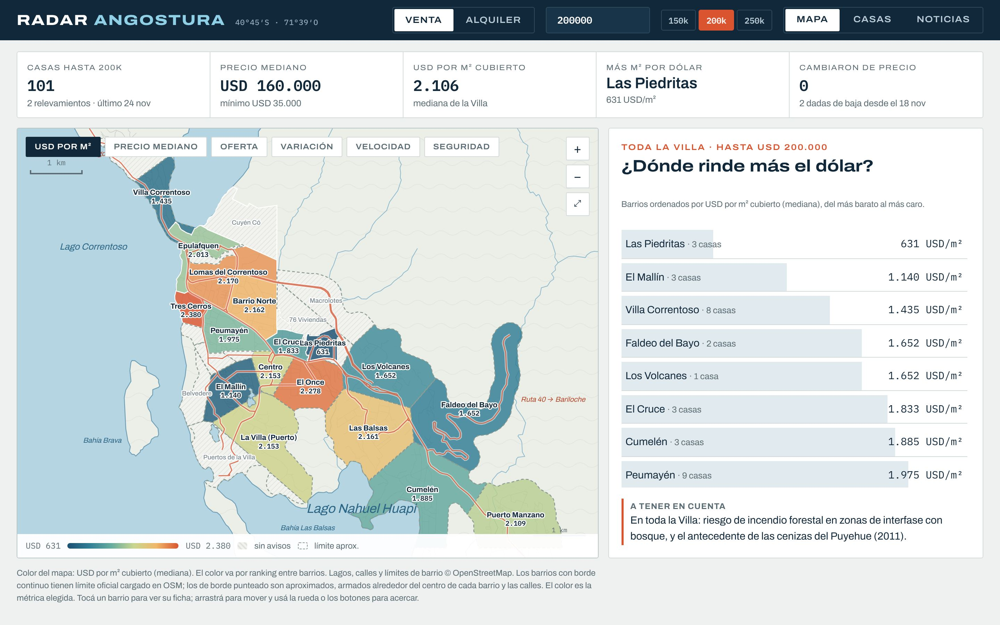
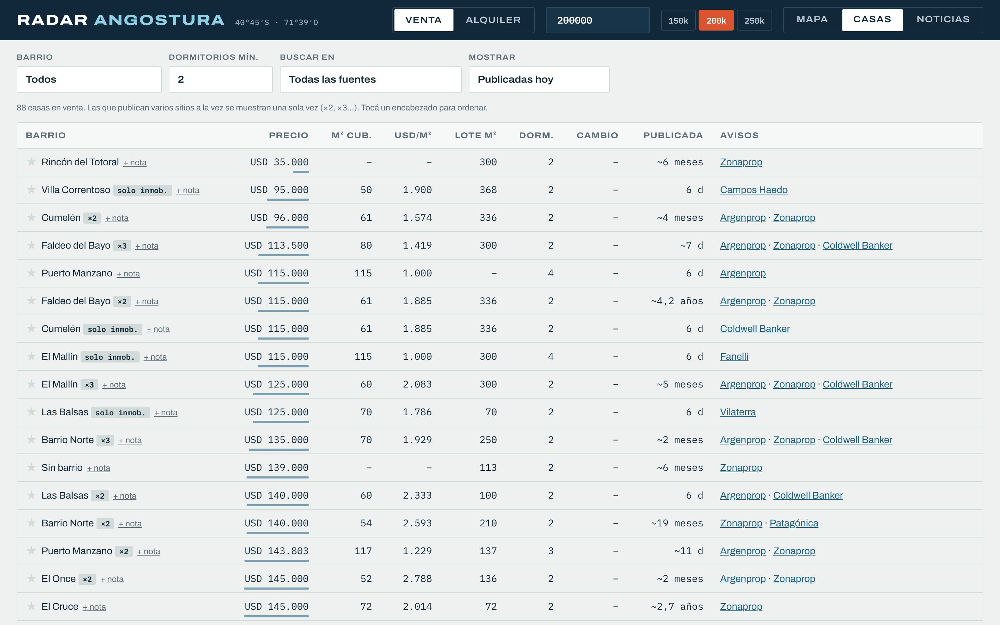
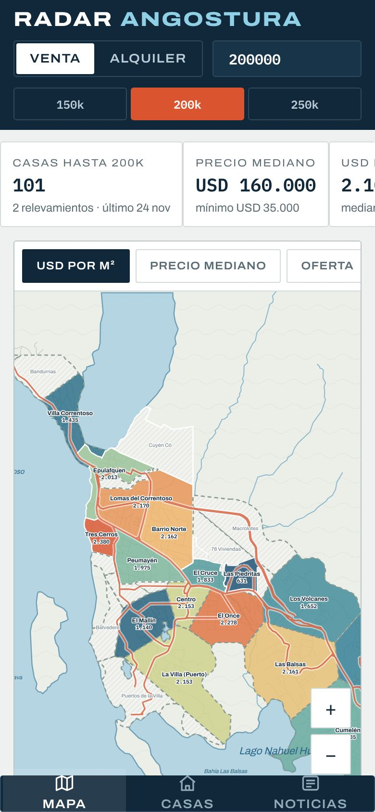
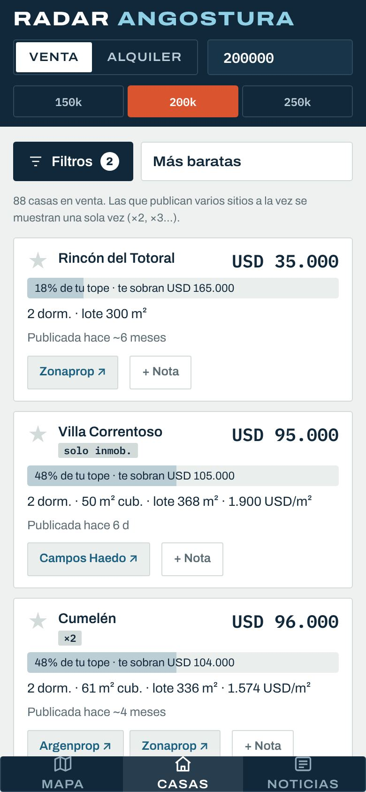
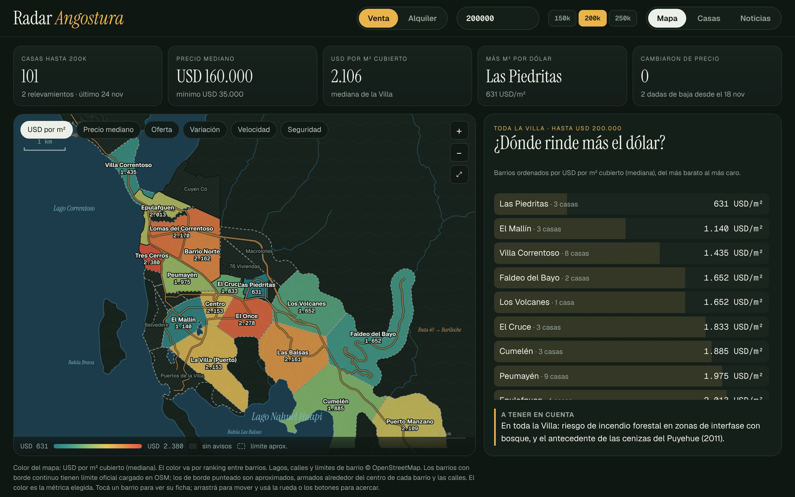
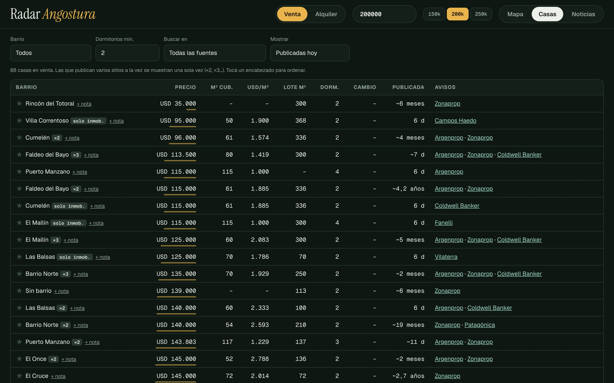
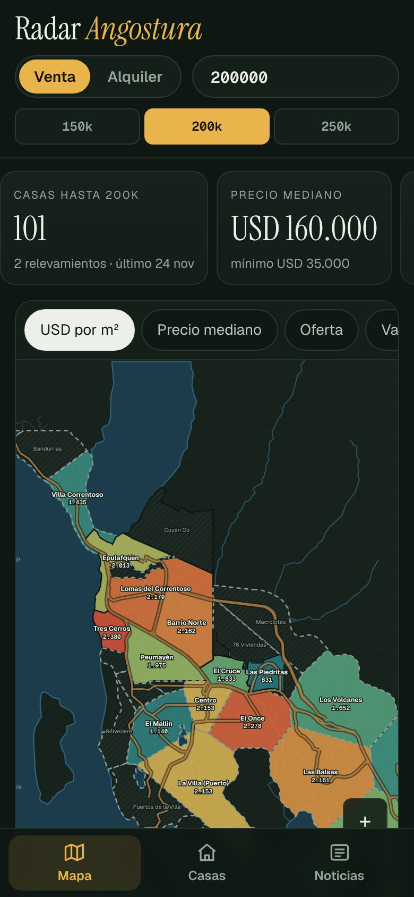
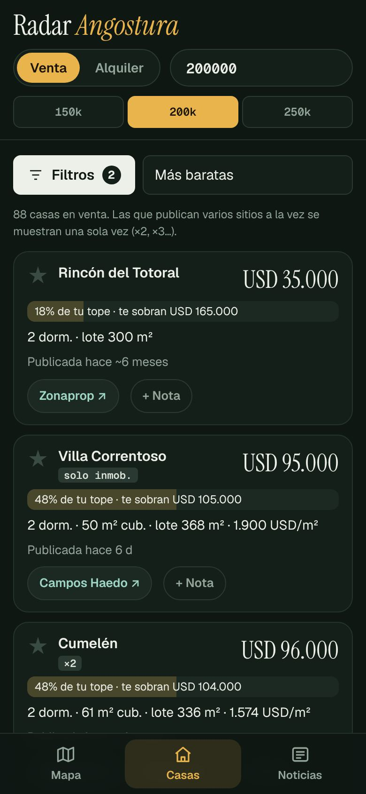
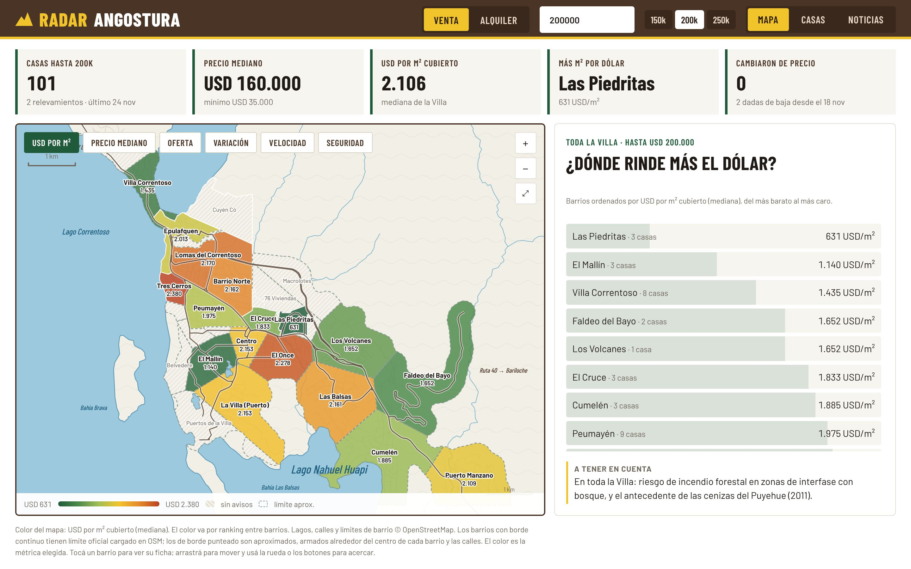
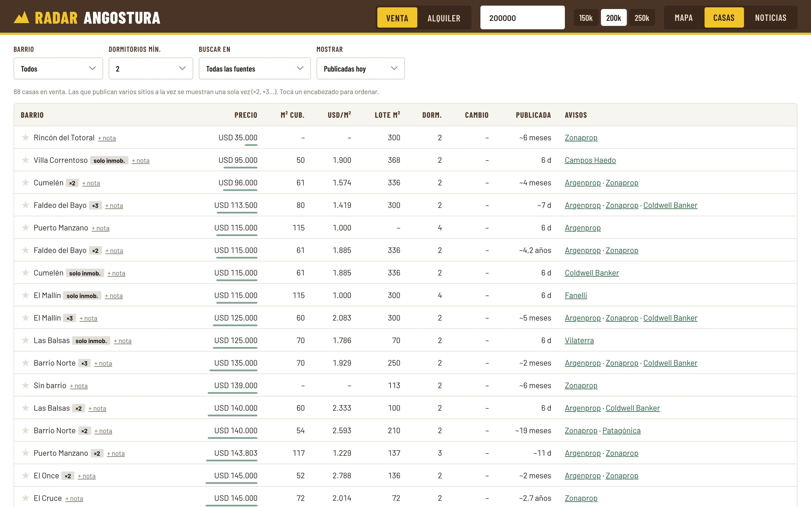
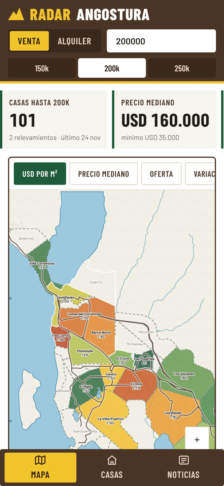
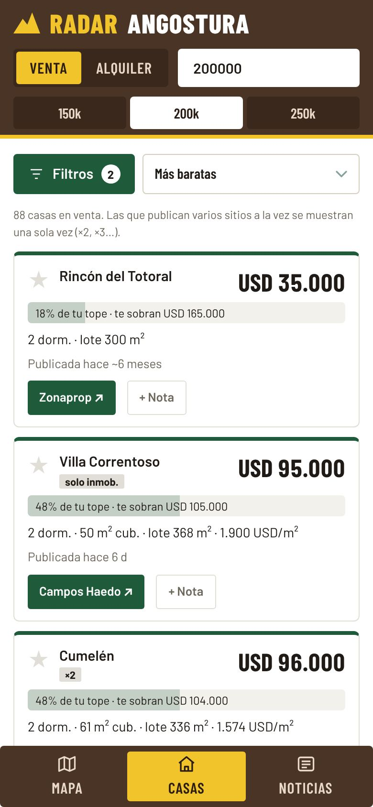
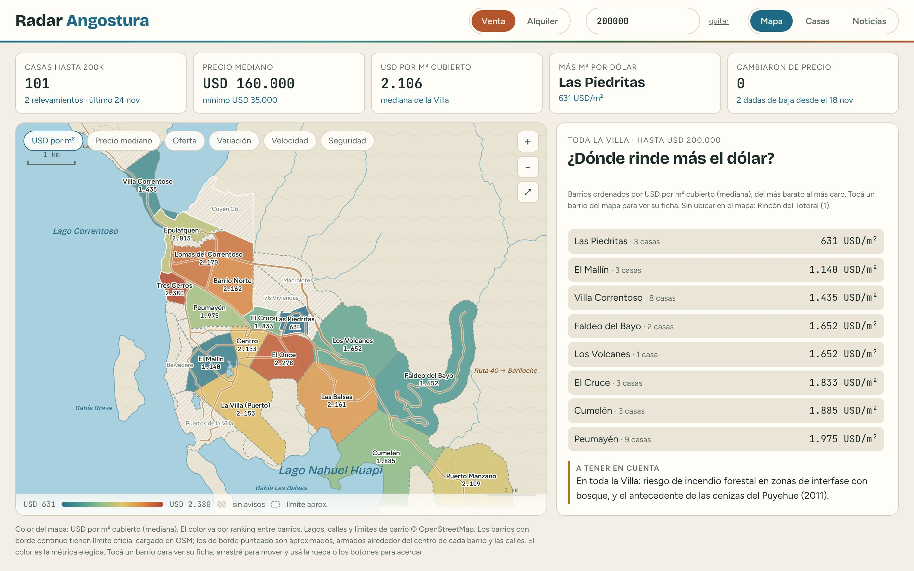